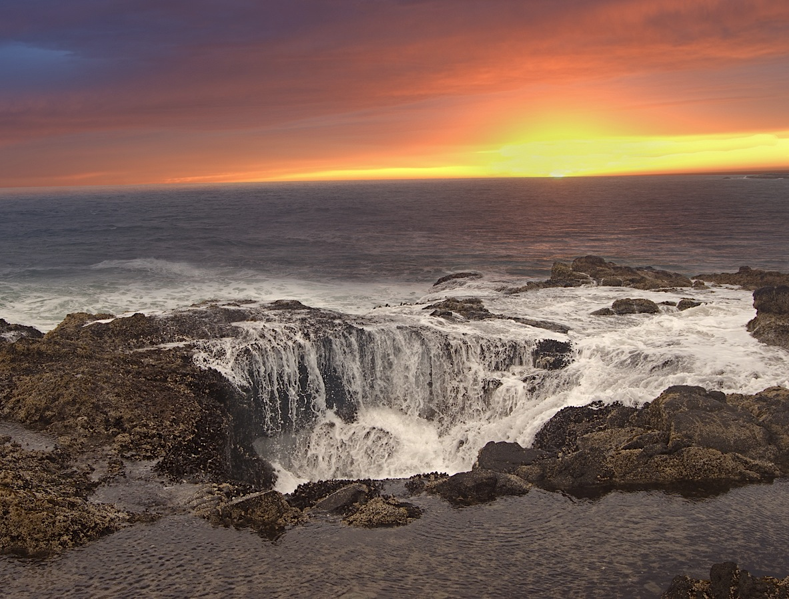
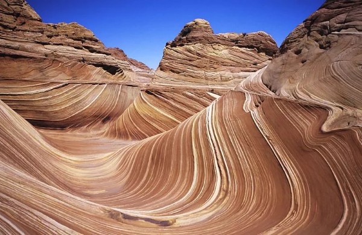
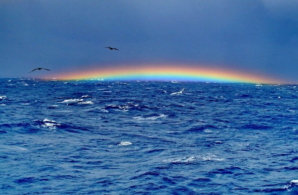
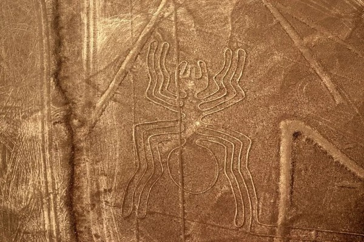
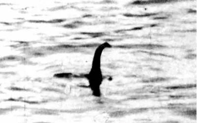

Sofia Lazzano
Thor's Well, USA
Il Thor's Well (pozzo di Thor) fa parte della riserva forestale Siuslaw National Forest e collega la terraferma con l'oceano tramite una serie di caverne sotterranee. In presenza di onde l'acqua viene "sputata" fino a un'altezza di 6 metri.
The Wave, USA
In Arizona si trova un'incredibile formazione rocciosa di arenaria risalente addirittura al periodo del Giurassico. Un tempo dune di sabbia, per effetto dell'erosione del vento e per la pioggia esse si sono trasformate in roccia solida. Il posto molto famoso per turisti e fotografi e il paesaggio si presenta come un'onda dai colori arancioni e rossi.
Triangolo delle Bermuda, Oceano Atlantico
Questa zona dell'Oceano Atlantico prende il nome dalla sua forma caratteristica, ovvero quella di un triangolo. Nel corso degli anni si è sempre più affermata la convinzione che questo sia un luogo maledetto: si dice che molte navi in transito siano sparite nel nulla, episodi che sono valsi a quest'area il nome di "Triangolo Maledetto".
Linee di Nazca, Perù
Le linee di Nazca sono enormi geroglifici nella zona costiera più arida del Perù, e raffigurano ragni, scimmie, piante e altri elementi. Risalgono circa al 500 a.C. e sono ben visibili soprattutto dall'aereo. Il perché di questi geroglifici resta avvolto nel mistero: non si sa perché la cultura preistorica di Nazca si sia sforzata in questo. Forse un segno rituale?
Loch Ness, Scozia
Il lago di Loch Ness si trova negli highlands scozzesi, ed è il lago della Scozia più grande per volume: ha una superficie di 56,4 km^2 e una profondità di 230 metri. Forse è questa dimensione che ha fatto nascere la leggenda di un mostro presente nel lago: la prima notizia di avvistamento risale addirittura al 1933, e le varie foto catturate non hanno mai avuto rilevanza scientifica.
